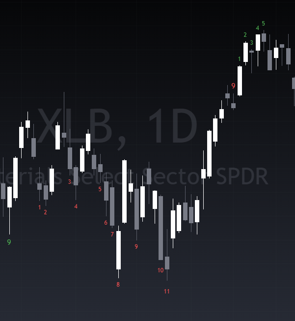
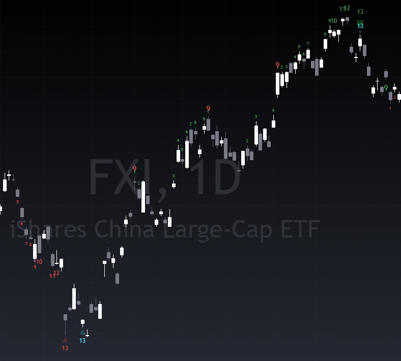
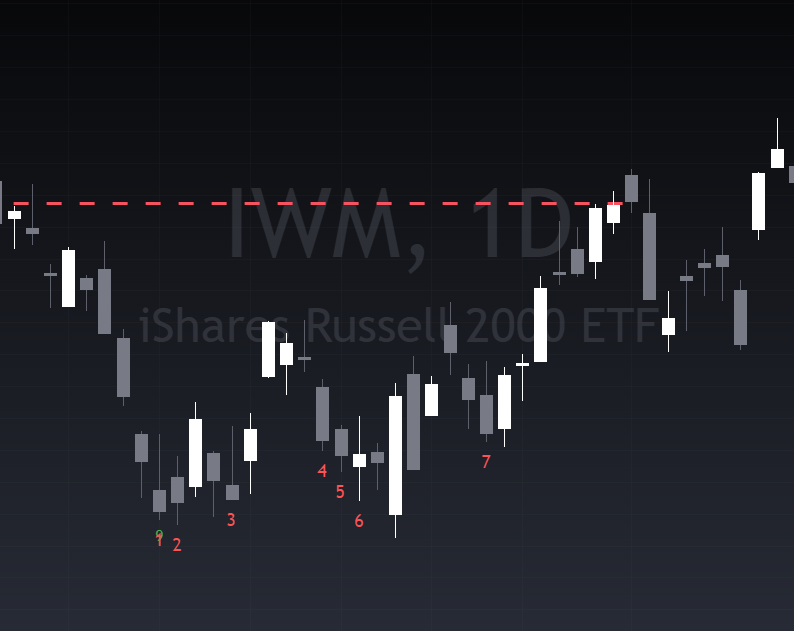
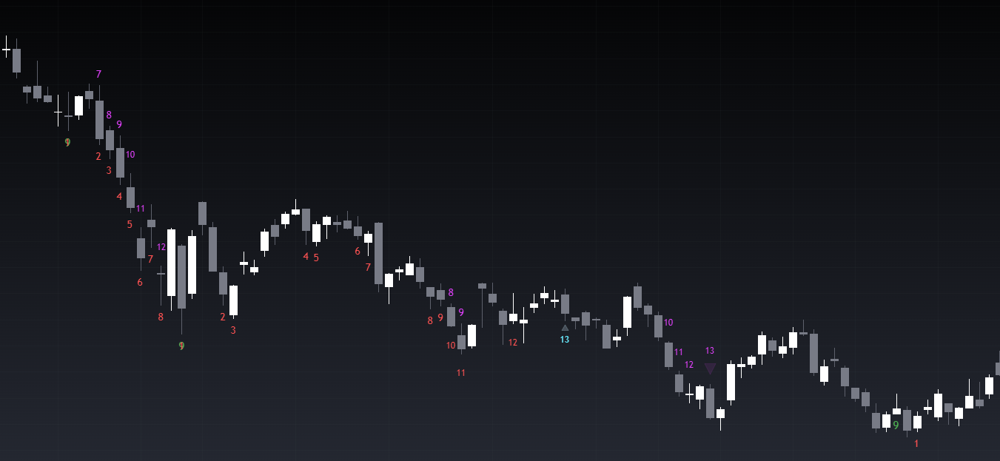

| Name | Ticker | Sector/Country | Seq Buy Count | Combo Buy Count | Seq Buy Weekly | Combo Buy Weekly | Seq 9-13-9 Buy | Combo 9-13-9 Buy | Seq Sell Count | Combo Sell Count | Seq Sell Weekly | Combo Sell Weekly | Seq 9-13-9 Sell | Combo 9-13-9 Sell |
|---|
DeMark indicators are well renown by the industry for their predictive power. DeMark indicators are used by many of the top traders to determine key points of selling or buying exhaustion. Many institutional investors use DeMark indicators as a key piece in their analysis. DeMark indicators are only available on a select few platforms, each which demand a steep price. As result of the steep price to get access the indicators, many retail investors do not know about them and their predictive power. Their power is a secret among the institutional investor community. This is not your average technical indicator.
The setup phase occurs when there are nine consecutive price bars, with each bar closing higher or lower than the close four bars earlier. In an upward trend, these bars should have progressively higher closes, while in a downward trend, the bars should have progressively lower closes. The setup phase is not interrupted by any price bar closing higher or lower than the corresponding bar four periods earlier.
Once the setup phase is complete, the countdown phase begins. It involves a further series of consecutive price bars with specific rules. For a buy countdown, there must 13 closes lower than the high of the bar 2 bars prior. For a sell countdown, there must be 13 closes higher than the high of the bar 2 bars prior. It is important to note that these do not need to be consecutive. A countdown stays active until it is canceled which can happen for many reasons.
If during a countdown a setup in the other direction occurs. For example, if a buy countdown is in progress and a sell setup occurs the buy countdown is canceled.
If during a countdown a setup in the same direction occurs. For example, if buy countdown is in progress and a buy setup occurs. This is called a recycle. DeMark has 24 different options for dealing with this situation, in this screener we have implemented the most strict one which recycles on any new setup.
If the market trades above or below the highest or lowest point of the setup portion of the Sequential. For example, if the market has an active buy countdown and the market trades above the highest point of its respective buy setup, then the countdown is canceled.
  To complete a TD Sequential, the final bar's close of the countdown has to be above or below the eighth bar of the countdown. For example, the close of bar 13 of a buy countdown must be lower than the close of the eighth bar of the countdown.
There are many methods to enter a position when a countdown completes. The first method is to buy on the completion of the countdown. A more conservative way of entering a position is to wait until you get a price flip in the opposite direction. For example, if a buy countdown completes then you would buy at the first time when the market has a close higher than the close 4 bars ago. Alternatively, you could combine the two and buy half your position size at the countdown completion and buy the other half when the first bullish price flip occurs. The light blue 13s represent a conservative countdown.
When a setup occurs in the TD Sequential, the countdown starts from that bar. When a setup occurs for a combo, the count starts at the first bar of the setup. Meaning that it goes back 9 bars to look for the conditions for count increments. The parameters of each count increment is also stricter than the TD Sequential.
The conditions for each increment for a combo buy countdown are as follows: the close must be less than the low of 2 bars prior, the low must be lower than low 1 bar prior, the close must be lower than the close 1 bar prior, and the close must be lower than the close of the last increment of the count.
The conditions for each increment for a combo sell countdown are as follows: the close must be greater than the high of 2 bars prior, the high must be higher than high 1 bar prior, the close must be greater than the close 1 bar prior, and the close must be higher than the close of the last increment of the count.
The 9-13-9 is an additional exhaustion indicator. It occurs when you have a setup 9, then a countdown 13, a price flip in the opposite direction, and then a subsequent setup 9 in the same direction as the first 9 and 13. The countdown part can either be a sequential or a combo. It is important to note that after the countdown 13, a price flip in the opposite direction must occur to start looking for the final setup 9. For example, if you get a buy countdown 13, to get a 9-13-9, you need a close that is greater than the close 4 bars ago, and then another buy setup 9. True for 9-13-9 displays when there has been a 9-13-9 in the prior 6 days. This is a rare event, out of 7,000 stocks that are scanned, normally 7-10 stocks have one.
The best way to use the screener is to buy stocks when they have both a combo and a sequential near each-other. This way you are combing the predictive power of both indicators. Also, do not buy any stock just because it has an active DeMark indicator. If a company is headed for bankruptcy a DeMark indicator will not fix this. It is also important to take not when price does not respond to a DeMark indicator as it suggests that there is some underlying very strong macro trend.